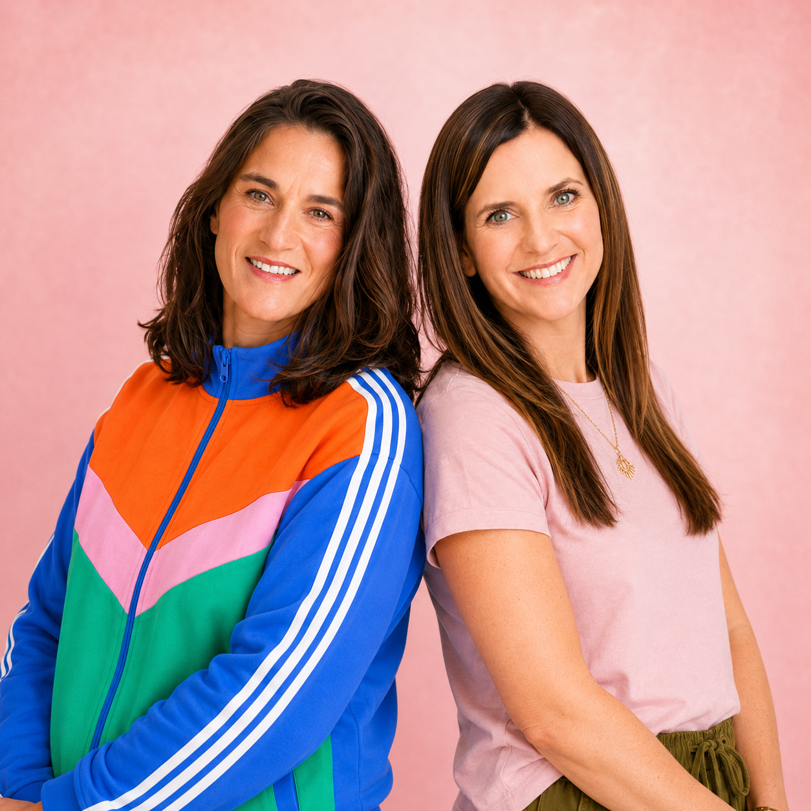

שאלון זה יעזור לך לקבל את הבסיס למיתוג האישי שלך —
ואיתו תוכל/י לצאת לדרך בצורה נכונה ומדויקת
הערך הוא אופן התקשורת שלך — הסגנון שלך ואיך תפנה לקהל שלך.
ניתן לבחור עד 5 ערכים.
שתף/י בכמה מילים מה הסיפור שלך —
תחביב, התנדבות, כל דבר שיכול לסייע בהוספת תוכן ייחודי
מה את/ה מרגיש/ה שחסר במדיה שלך כרגע?
איזה חלק בך עוד לא קיבל ביטוי?
מה היית רוצה שאנשים ירגישו כשהם נכנסים לעולם שלך?
על איזה פרופיל את/ה מסתכל/ת שהוא השראה עבורך?
מה בו/בה מושך אותך?
אילו צבעים חוזרים בהשראות שלך? עד 3 צבעים.
האם העולם שלך יותר... (ניתן לבחור יותר מאחד)
אילו מילים מתארות את האסתטיקה שאת/ה נמשכ/ת אליה? (ניתן לבחור יותר מאחד)
אם המותג שלך היה מקום — איפה הוא היה?
אם המותג שלך היה חומר — איזה חומר הוא היה?
אם המותג שלך היה תחושה בגוף — איזו תחושה?
הנה כמה דברים שאפשר לעשות עם הערכים שלך בתקשורת השיווקית:
אריאלה ושרון
